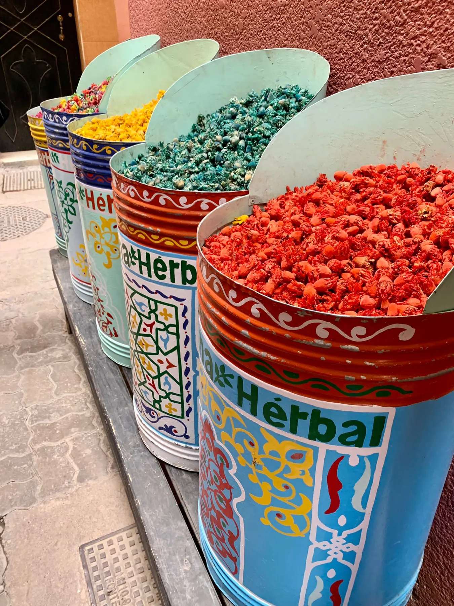
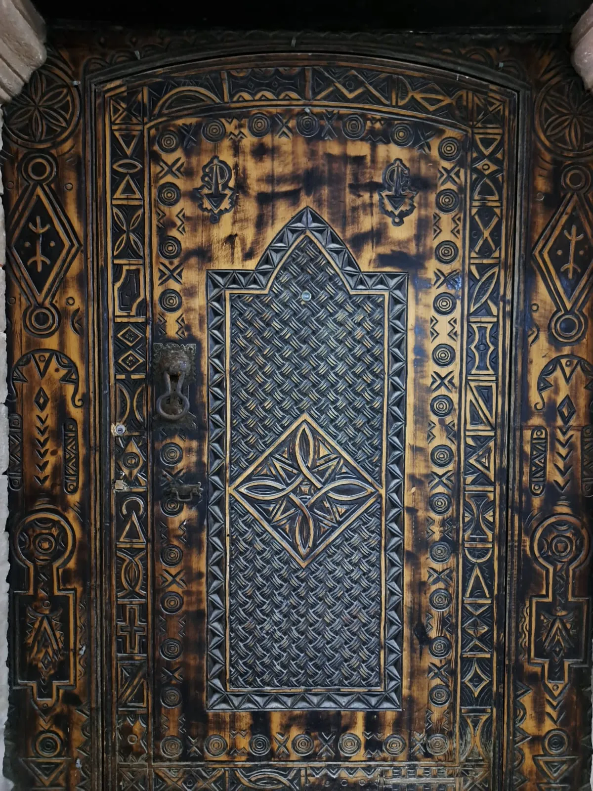
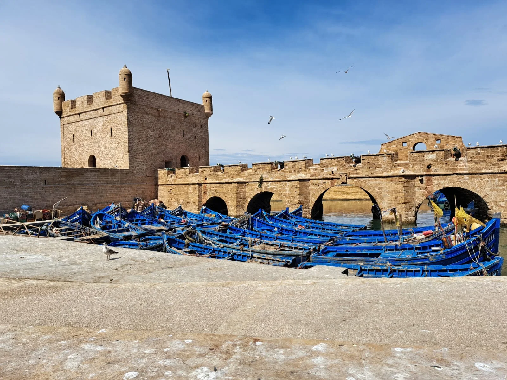
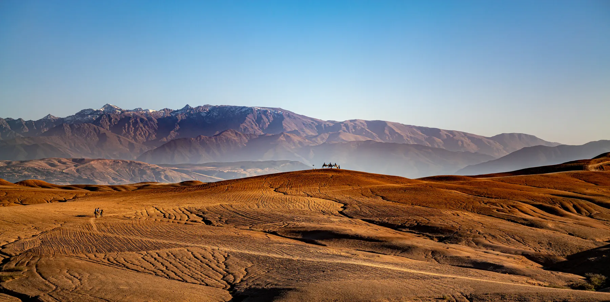
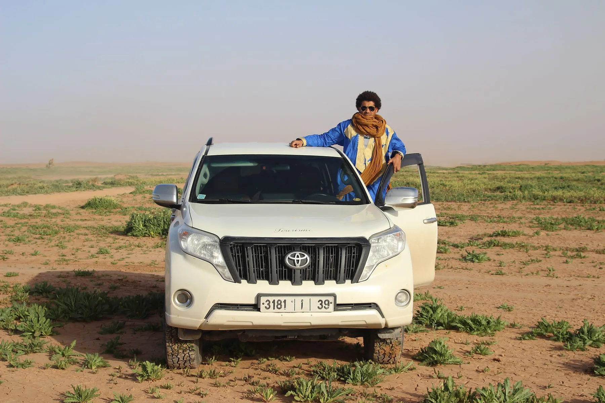
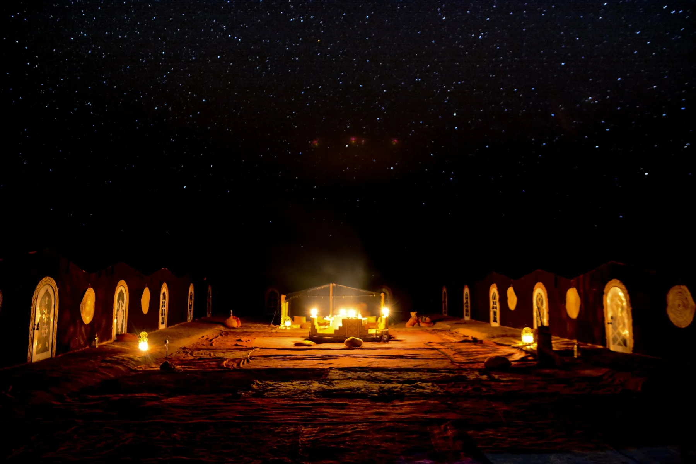
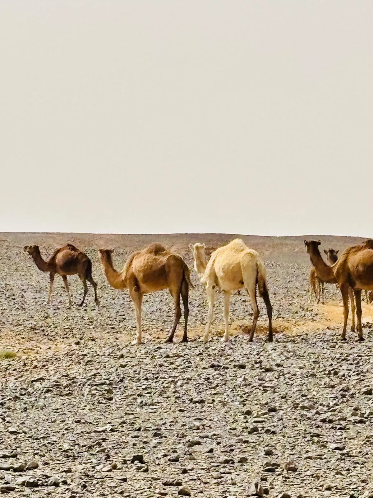
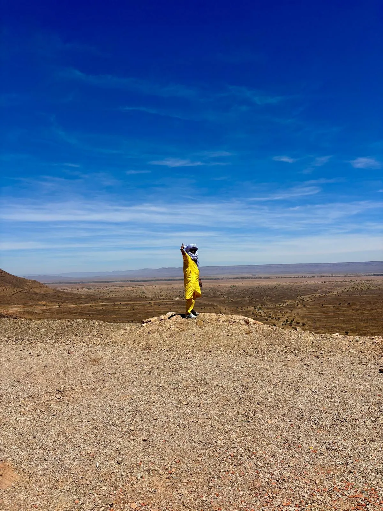
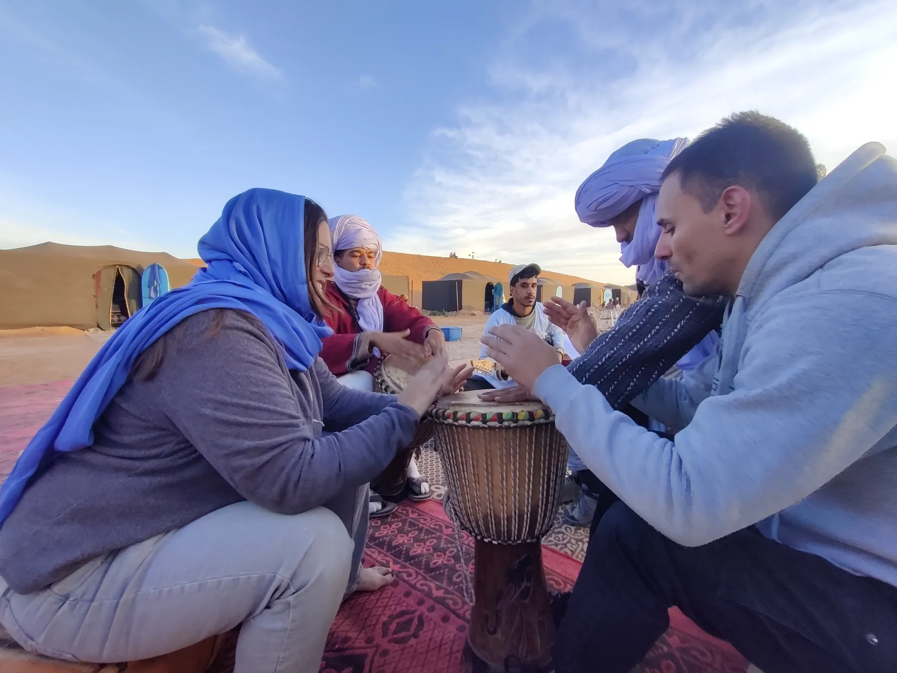
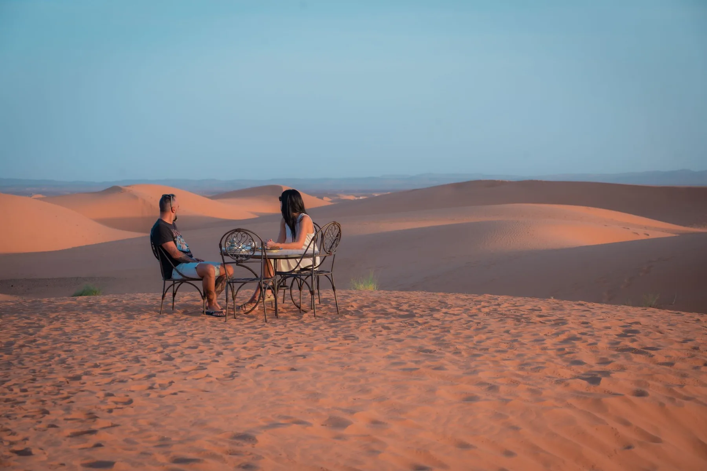

JOUR 1 · Marrakech
D'abord, le rythme de la ville
Nous commençons à Marrakech.
Deux nuits pour entrer dans le rythme du voyage, se perdre dans ses rues, savourer sa gastronomie et laisser le Maroc apparaître peu à peu.

11 jours · Marrakech · Essaouira · Taroudant · Erg Chigaga · Oasis de Fint · Vallée du Drâa
Un voyage qui traverse le Maroc d'ouest en sud.
Deux nuits à Marrakech. Deux face à l'Atlantique. Le sud, les montagnes et la vallée du Drâa. Deux nuits entre les dunes d'Erg Chigaga. Et du temps pour découvrir les oasis et les paysages rencontrés en chemin.
Un voyage pour ceux qui veulent découvrir le Maroc à travers ses contrastes.
Je veux faire cet itinéraire ↗
Nous commençons à Marrakech.
Deux nuits pour entrer dans le rythme du voyage, se perdre dans ses rues, savourer sa gastronomie et laisser le Maroc apparaître peu à peu.

Une deuxième nuit pour profiter de la ville sans courir.
Le voyage se prépare doucement avant de mettre le cap sur l'Atlantique.

Nous quittons Marrakech et prenons la direction de la côte.
Le paysage change à mesure que nous approchons de l'océan.

Essaouira est un autre Maroc : océan, vent, port, poisson frais, rues blanches et un rythme beaucoup plus tranquille.
Deux nuits pour profiter de la ville et de la mer avant de continuer vers le sud.

Le changement commence. Nous quittons l'océan et avançons vers l'intérieur des terres.
Le paysage se transforme et nous arrivons à Taroudant, une ville entourée de remparts, réputée pour son ambiance plus locale.
Une nuit pour se reposer avant de continuer vers le Sahara.

Nous poursuivons vers le sud. Le paysage devient de plus en plus aride jusqu'aux portes du Sahara.
De là, nous entrons en 4x4 vers Erg Chigaga. Les dunes apparaissent peu à peu.

Nous ne voulons pas que le désert soit une étape rapide du voyage. Nous voulons que vous ayez le temps d'être là, tout simplement.
Marcher sur les dunes. Partager un thé. Écouter de la musique sahraouie. S'asseoir autour du feu. Regarder les étoiles. Et se réveiller entouré de silence.
Ici, le temps s'écoule autrement.

Nous quittons les dunes et continuons à découvrir le sud.
Deux nuits dans la région de l'oasis de Fint pour ralentir à nouveau et explorer les paysages autour d'Ouarzazate.

Nous visitons Aït Ben Haddou et nous approchons de la vallée du Drâa, avec ses oasis, ses palmeraies et ses kasbahs.
Après les dunes, un autre paysage. Une autre façon de comprendre le sud.

Nous commençons le chemin du retour vers Marrakech.
La dernière nuit peut se passer en ville ou dans les environs, selon l'horaire du vol et le type de voyage souhaité. Une dernière nuit pour se reposer avant de rentrer chez soi.

Petit-déjeuner et transfert à l'aéroport.
Le voyage se termine. Mais après onze jours, le Maroc ne ressemble plus à ce qu'il était à votre arrivée.
Nous pouvons adapter le parcours, la durée, les hébergements et les expériences selon votre temps, vos centres d'intérêt et votre manière de voyager.
Parlons de cet itinéraire ↗